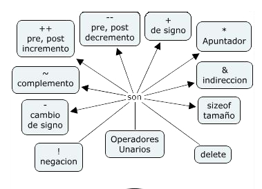

A.1) Tablas de Verdad. Operador Unario – Conceptos-1
Argumentos válidos y su demostración

Argumento es un razonamiento que demuestra, refuta o justifica algo y demostrar es hacer patente que determinada cosa es verdad o se cumple, generalmente por medio de algún razonamiento o acción.
Para llevar a cabo una demostración, será necesario analizar y tratar de comprender la situación, con inspiración y creatividad.
El desarrollo de cualquier teoría requiere afirmaciones = enunciados = proposiciones que son V o F no ambas.
Sean p q r proposiciones primitivas porque no se pueden descomponer.